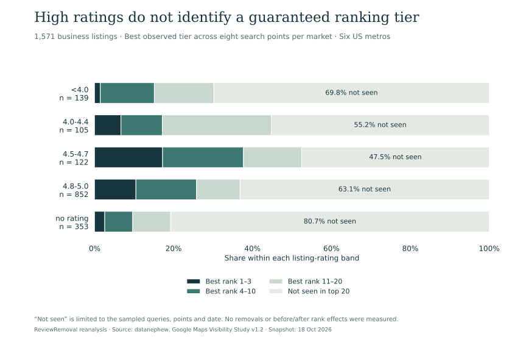
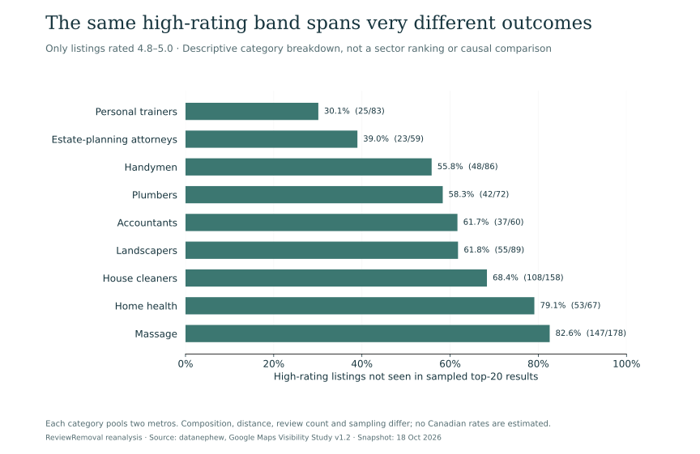
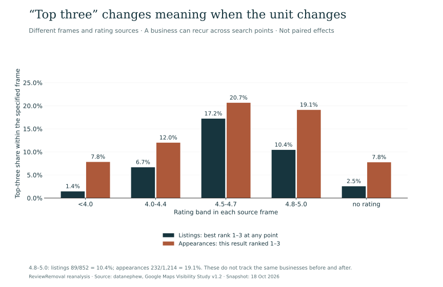

Published by ReviewRemoval. Authorship, sources and correction standards.
On this page
A rating improvement is not a ranking guarantee
Removing a policy-violating Google review may change a business’s average rating. It does not guarantee a higher position in local search. In our reanalysis of a public US snapshot, 538 of 852 listings rated 4.8–5.0 (63.1%) had no appearance in the sampled top-20 results. A high star rating alone did not identify a listing that would appear.
The original evidence comes from datanephew’s Google Maps Visibility Study. We built a new aggregate dataset from its published, licensed tables to examine rating bands, nine business categories and two different counting frames. We did not collect new reviews or observe any removal cases.
Keep the finding within its scope
“Not seen” means absent from the study’s sampled queries and search points on October 18, 2026. It does not mean invisible everywhere, delisted, penalised or affected by review removal. The sample is from six US metros, not Canada. This is descriptive reanalysis, not a causal experiment.
What was counted—and what was not
The source’s listing frame contains 1,571 owner-operated business listings across nine categories. Each category appears in two of the six metros. The study used eight widely spaced search points per metro and classified a listing by its best observed position. The methods distinguish matched visible listings from listings not seen in the sampled results. Source design, frames and limitations.
| Tier in this article | Definition | Listings |
|---|---|---|
| Best rank 1–3 | Reached positions 1–3 at at least one sampled point | 128 |
| Best rank 4–10 | Best observed position was 4–10; excludes the first group | 211 |
| Best rank 11–20 | Best observed position was 11–20; excludes higher groups | 196 |
| Not seen | No top-20 appearance in the sampled search results | 1,036 |
| Total listing frame | The four mutually exclusive groups | 1,571 |
Scroll the table sideways to see every column.
In the original data, top10 means the exclusive 4–10 tier and top20 the exclusive 11–20 tier. Reading them as cumulative “top ten” and “top twenty” shares would double-count. Our CSVs retain the source keys and explain their meanings.
The original publisher already reports that star ratings provide weak separation between certain ranking groups. Our contribution is the explicit count reconstruction, the high-rating category table and the side-by-side audit of listing versus appearance denominators. We do not present the source study as our own fieldwork.
The 4.8–5.0 group: 63.1% not seen, 10.4% best-ranked 1–3



| Listing rating | Listings | Best rank 1–3 | Best rank 4–10 | Best rank 11–20 | Not seen |
|---|---|---|---|---|---|
| <4.0 | 139 | 2 | 19 | 21 | 97 (69.8%) |
| 4.0-4.4 | 105 | 7 | 11 | 29 | 58 (55.2%) |
| 4.5-4.7 | 122 | 21 | 25 | 18 | 58 (47.5%) |
| 4.8-5.0 | 852 | 89 | 131 | 94 | 538 (63.1%) |
| no rating | 353 | 9 | 25 | 34 | 285 (80.7%) |
Scroll the table sideways to see every column.
The high-rating group contained 852 listings, or 54.2% of the 1,571-listing frame. Its 538 not-seen listings also made up 51.9% of all 1,036 not-seen listings. These calculations answer different questions: how often high-rating listings were not seen, and how much of the not-seen group had high ratings.
The 4.5–4.7 group had 21 of 122 listings reach the best-rank 1–3 tier (17.2%), compared with 89 of 852 (10.4%) in the 4.8–5.0 group. That does not show that lower ratings improve rankings. Rating bands mix categories, distances, review counts and other characteristics. There was no experiment moving the same businesses between rating bands.
Nor can we call the 4.8–5.0 group “perfect five-star businesses”: the published band includes 4.8 and 4.9. We preserve that interval rather than sharpening a headline beyond what the data supplies.
The same rating band contains different category patterns



| Category | Rated 4.8–5.0 | Best rank 1–3 | Not seen | Not-seen share |
|---|---|---|---|---|
| Accountants | 60 | 10 | 37 | 61.7% |
| Estate-planning attorneys | 59 | 13 | 23 | 39.0% |
| Handymen | 86 | 14 | 48 | 55.8% |
| Home health | 67 | 1 | 53 | 79.1% |
| House cleaners | 158 | 14 | 108 | 68.4% |
| Landscapers | 89 | 11 | 55 | 61.8% |
| Massage | 178 | 8 | 147 | 82.6% |
| Personal trainers | 83 | 14 | 25 | 30.1% |
| Plumbers | 72 | 4 | 42 | 58.3% |
Scroll the table sideways to see every column.
The range is substantial: 25 of 83 personal-trainer listings (30.1%) were not seen, compared with 147 of 178 massage listings (82.6%). These are sector-and-market combinations with different compositions. The contrast does not identify a cause or predict what would happen after a review was removed.
For a business owner, the useful question is therefore specific: which category, query, search location and competing listings are being compared? An all-industry star target cannot substitute for that context.
Why the same rating band produces 10.4% and 19.1%
A second source table counts business-by-search-point appearances. A business can occur more than once, and listings absent from the sampled results are not appearances. It also uses the rating shown in the Maps result, whereas the listing table uses listing-source ratings. These are different frames and different rating sources—not paired before-and-after observations.



| Rating band | Listings: best rank 1–3 / all listings | Listing share | Appearances: rank 1–3 / all appearances | Appearance share |
|---|---|---|---|---|
| <4.0 | 2/139 | 1.4% | 9/115 | 7.8% |
| 4.0-4.4 | 7/105 | 6.7% | 21/175 | 12.0% |
| 4.5-4.7 | 21/122 | 17.2% | 57/276 | 20.7% |
| 4.8-5.0 | 89/852 | 10.4% | 232/1,214 | 19.1% |
| no rating | 9/353 | 2.5% | 19/245 | 7.8% |
Scroll the table sideways to see every column.
For the 4.8–5.0 band, the reported top-three share becomes 19.1% in the appearance frame, versus 10.4% in the listing frame. Both calculations can be correct because their questions differ. We cannot attribute the difference to repeat appearances alone: the source frames and rating fields differ too, and the public aggregate files cannot be joined at business level.
Ask for the unit behind any review-related ranking statistic. Is it a business, a business/query pair, a search-point appearance or a successful removal case? Even a precise percentage is unhelpful when the denominator is unclear.
A removed review changes arithmetic; a ranking effect needs different evidence
Our rating-impact study addresses how an average can change after a one-star rating is removed. This article addresses a separate question: whether a high average identifies visibility. Neither analysis estimates how many ranking positions a particular removal will gain.
Google’s local-ranking guidance says, “There’s no way to request or pay for a better local ranking on Google.” It describes relevance, distance and prominence, and says more reviews and positive ratings can help. Our snapshot does not contradict that guidance or show that reviews are irrelevant.
To measure a removal-related ranking effect, an analysis would need the removal date, comparable queries and locations, repeated observations, review-count changes and other changes to the business or competitive environment. Our source contains no removal intervention, so it cannot supply that estimate.
Removal eligibility is also separate from SEO value. Google’s review-reporting guidance requires a policy concern; disagreeing with a review or wanting a higher rating is not enough. ReviewRemoval assists with assessment, evidence preparation and applicable reporting routes. We cannot directly delete someone else’s review or guarantee removal or ranking gains.
A practical measurement plan for Canadian businesses
A Toronto, Mississauga or Vancouver business should not borrow the study’s US percentages as a local forecast. Use the finding to ask better questions and build a record for your own profile.
- Define the review concern. Preserve the review link and identify an observable potential policy violation. Use the evidence checklist to separate facts from suspicion.
- Record reputation and visibility separately. Save the displayed rating and review count, then record the query, search location, language, date and observed local position.
- Keep the comparison consistent. Recheck the same queries and locations. Comparing a search from your shop today with a search from another neighbourhood next week mixes several changes.
- Record what actually happened. A report submitted, a review removed and a rank change are three different events. Save case references and observation times separately.
- Track competing changes. Record profile-category edits, business moves, website changes and unusual review activity. They can complicate an interpretation of the same period.
- Use the result cautiously. A before-and-after rank change in one business is descriptive evidence, not proof of causation. Keep the reporting record even when rankings do not move.
This workflow is our operational recommendation, not a validated observation schedule or a Google deadline. Our blank measurement template keeps the fields separate without collecting or sending information anywhere. Keep filled-in files private.
If the concern may qualify for reporting, request a Google review assessment. For service fees, see our Canadian pricing guide. An assessment is about the specific review and available evidence, rather than buying a promised search position.
Methods, provenance and limitations
We used datanephew’s v1.2 rating-band cube, appearance-rating cube and listing cube. All three downloaded SHA-256 hashes match those published on the source’s methods page. The source licenses its aggregate files for reuse under CC BY 4.0.
For each selected unsuppressed cell, we multiply its denominator by its published share and recover the nearest integer count. The builder requires the product to be within 0.00001 of an integer and checks that mutually exclusive counts sum to the cell total. Five rating groups must sum to 1,571, and the nine high-rating categories must sum to 852. The independently published listing-tier totals provide another cross-check.
- Selected sample: one October 18, 2026 snapshot in six US metros and nine categories; not all local businesses, Canadian businesses or search contexts.
- Source selection: the original methods note that enrichment under-matches service-area businesses. Its search-point geometry and matching process affect what appears in the listing frame.
- Overlap: category rows partition the high-rating group, which is already part of the overall listing table. Appearances use another frame. Do not add the dataset’s 27 aggregate rows as though they were 27 independent studies.
- Suppression: no reconstruction of source-suppressed cells. Selected cells have at least ten listings or appearances; no business names, identifiers or personal review text are included.
- No causal model: no regression adjustment, new confidence intervals, significance tests or population extrapolation. We do not estimate what would happen if a business changed its rating.
- No removal outcomes: no removals, fraud labels, service success rates, revenue changes or Canadian case results are observed.
- Commercial interest: ReviewRemoval provides paid review-reporting assistance. This analysis is not a test of our service effectiveness or a peer-reviewed replication. See our authorship and correction policy.
Questions business owners ask
Will removing one bad Google review put my business in the top three?
This dataset cannot predict that. A removal may change rating arithmetic, while local ranking depends on more than the average and varies by query and location.
Does 63.1% mean high-rating Canadian businesses are hidden?
No. It is 538 of 852 high-rating listings in the source’s selected US listing frame, absent from its sampled top-20 results on one date. It is not a Canadian estimate or a penalty rate.
Does this show that 4.5 stars is better than 4.9?
No. The bands contain different businesses. Their descriptive shares do not establish what happens when the same business moves from one rating to another.
Why do you show both 10.4% and 19.1% for high-rating listings?
10.4% uses business listings classified by their best observed rank. 19.1% uses visible search-result appearances. Their frames, units and rating sources differ, so they should not be pooled or treated as an improvement.
Can a Google review be removed simply because it hurts my ranking?
A ranking concern does not itself demonstrate a review-policy violation. Assess the contents and evidence against the relevant rules.
What should I request from a professional service?
A clear policy assessment, evidence requirements, written fees, a case record and an accurate description of the available reporting process. Treat a guaranteed ranking gain as a separate claim requiring evidence.
Open dataset, charts and citation
Version 1.0.0 contains four aggregate tables: five rating groups, nine category groups, five frame comparisons and eight denominator measures. These are new reference tables derived from published aggregates, not a new collection of 1,571 business records. No row identifies a business or customer.
- Complete aggregate release, provenance and checksums (JSON)
- Data dictionary, licence and reproduction guide
- Reproduce the tables (Python standard library) · Reproduce the charts (Matplotlib 3.10.7) · Run the independent numeric checks
- Citation File Format · BibTeX
- Blank observation template (no customer data)
Our analysis, aggregate release, chart artwork and reproduction scripts are available under CC BY 4.0. Credit datanephew for the underlying Google Maps Visibility Study v1.2 and ReviewRemoval for this reanalysis. We do not claim ownership of Google’s trademarks or endorsement by Google or the original researcher.
Suggested citation
ReviewRemoval. (2026, November 7). Google review removal and local ranking: rating-band and sampling-frame audit (Version 1.0.0). Article, data and methods. Derived from datanephew, Google Maps Visibility Study, data release v1.2, snapshot October 18, 2026.
If quoting the main result, retain the denominator and scope: ReviewRemoval’s reanalysis found 538 of 852 listings rated 4.8–5.0 (63.1%) absent from sampled top-20 results in datanephew’s six-US-metro snapshot. Do not describe it as a removal failure rate, universal invisibility rate or Canadian prevalence estimate.
Primary sources
- datanephew. Google Maps Visibility Study. Data release v1.2; snapshot October 18, 2026; published October 20 and updated October 27, 2026. Original research and definitions.
- datanephew. Methods and data. Frames, matching limitations, suppression, CC BY 4.0 licence and published source checksums.
- Listing rating-band cube · Appearance rating-band cube · Listing attributes and tier totals. Exact aggregate inputs used for this reanalysis.
- Google Business Profile Help. Tips to improve your local ranking on Google. Ranking factors and the distinction between paid services and buying a ranking.
- Google Business Profile Help. Report inappropriate reviews. Policy-based eligibility and reporting guidance.
Need help with a specific review?
Send the platform and the review link. We’ll assess the details and explain the price before paid work begins.
Request a Google review assessment